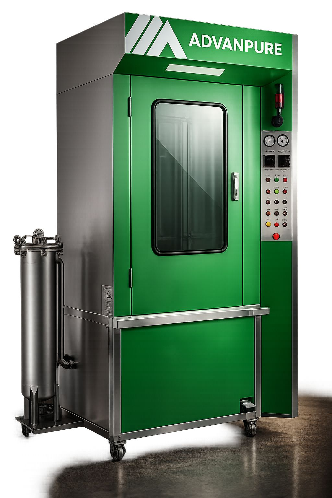
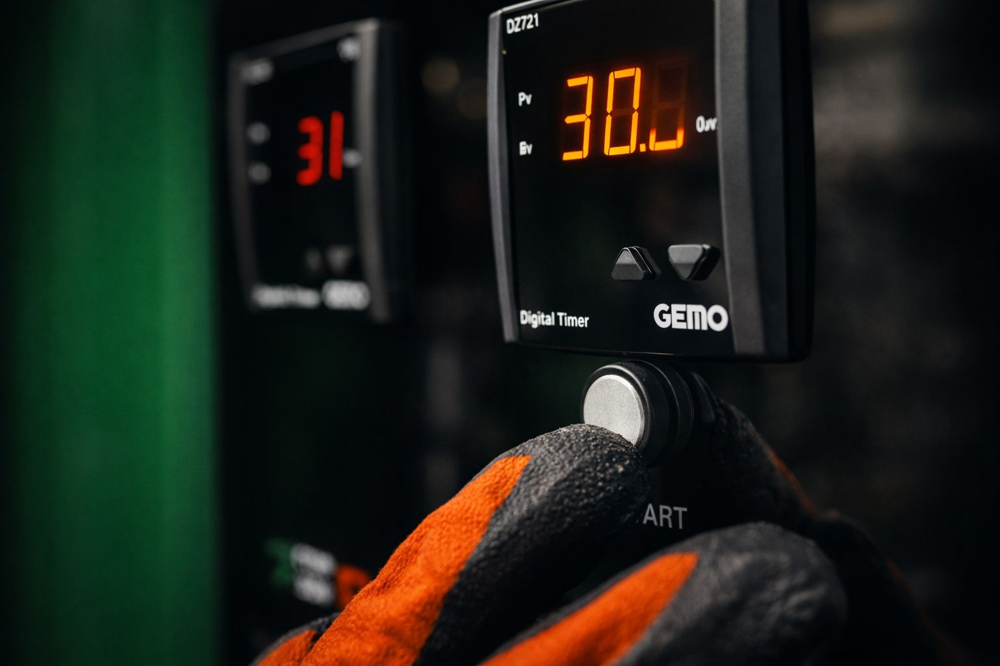
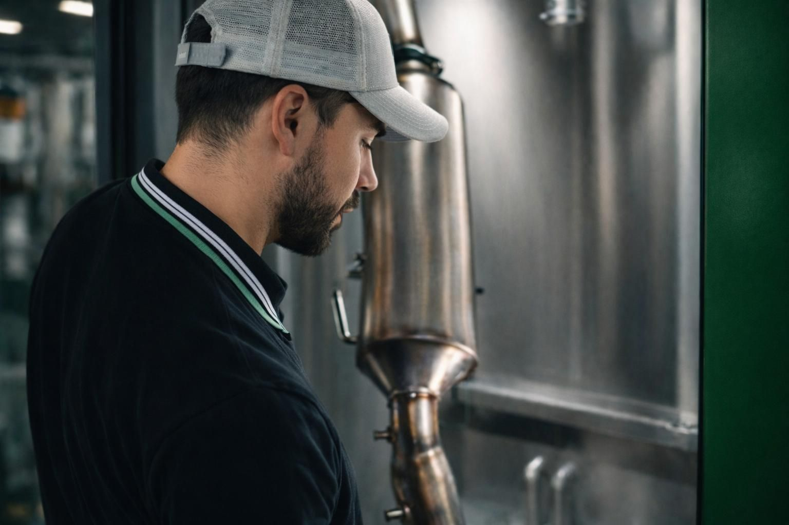

Proč je mokrá metoda účinnější než vypalování a jiné „garážové" čištění
Mokré čištění je řešení ve chvíli, kdy regenerace přestává fungovat.
Čištění DPF filtru není jen o „propláchnutí". Rozhoduje technologie, postup a zkušenost. Právě proto používáme specializované zařízení a procesy, které respektují konstrukci DPF filtru a jeho skutečné zanesení.
Mokré čištění funguje na principu
Tím se z filtru fyzicky odstraní i nečistoty, které běžná regenerace nikdy nevyřeší.
Řízené proudění při optimální teplotě.
Speciální přípravky šetrné ke keramice filtru.
Nečistoty odstraňujeme obráceně oproti směru spalin.
Filtr je sušen horkým vzduchem před výstupní kontrolou.

Pro čištění používáme profesionální technologii Advanpure AD4000, určenou pro mokré čištění DPF filtrů osobních, užitkových i těžkých vozidel. Celý proces je nastaven tak, aby byl účinný, šetrný a opakovatelný. Čisticí stroj ADVANPURE AD4000 funguje na bázi hydrodynamického čištění.
Proces zahrnuje:
Mokré čištění je řešení ve chvíli, kdy regenerace přestává fungovat.

Každý DPF filtr má jinou konstrukci a jiný stupeň zanesení. Proto nepoužíváme univerzální postupy „na jeden klik".
U každého filtru:
Používaná technologie vyžaduje správné nastavení a znalost postupů. Naši pracovníci jsou pravidelně školeni a dodržují doporučené výrobní a bezpečnostní postupy.
Díky tomu:

Ukázka procesu čištění DPF filtru na profesionálním zařízení.
Fakt: Regenerace spálí pouze saze, které se ve filtru usazují při běžném provozu. Popel, který vzniká dlouhodobým provozem motoru, je nespálitelný a zůstává ve filtru. Právě popel je nejčastější příčinou, proč se DPF filtr postupně ucpe a problém se opakuje. Regenerace tedy není plnohodnotné vyčištění DPF filtru.
Fakt: Delší jízda vyšší rychlostí může pomoci pouze v případě, že je filtr zanesen lehce a regenerace ještě probíhá správně. Pokud je filtr zanesen popelem nebo je regenerace dlouhodobě neúspěšná, delší jízda už problém nevyřeší.
Fakt: Nucená regenerace opět řeší hlavně saze, nikoliv popel. Často se stává, že po nucené regeneraci kontrolka DPF na chvíli zhasne, ale po krátké době se problém vrátí. V takovém případě je nutné profesionální čištění mimo vozidlo.
Fakt: Aditiva a čisticí spreje mohou pomoci se sazemi, ale neodstraní popel usazený hluboko ve filtru. Navíc nejsou řešením u silně zanesených nebo dlouhodobě problémových DPF filtrů.
Fakt: Profesionální mokré čištění na specializované technologii je navrženo tak, aby bylo šetrné ke keramické struktuře filtru a zároveň účinné. Důležité je správné nastavení procesu podle typu filtru a jeho stavu, proto každý filtr prochází vstupní i výstupní kontrolou.
Fakt: Ne každý filtr je možné zachránit. Pokud je DPF filtr mechanicky poškozený nebo prasklý, čištění nemá smysl. Seriózní firma to pozná při kontrole a doporučí správné řešení.
Ozvěte se nám – stav filtru zhodnotíme a navrhneme vhodné řešení.
Kontaktovat nás